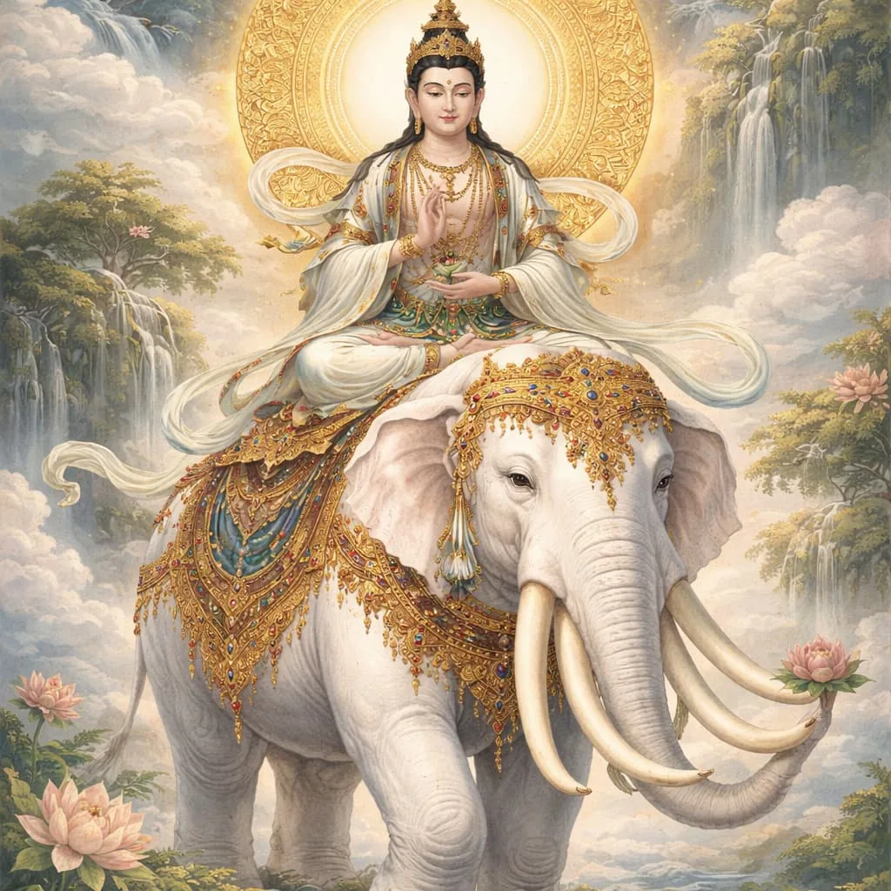
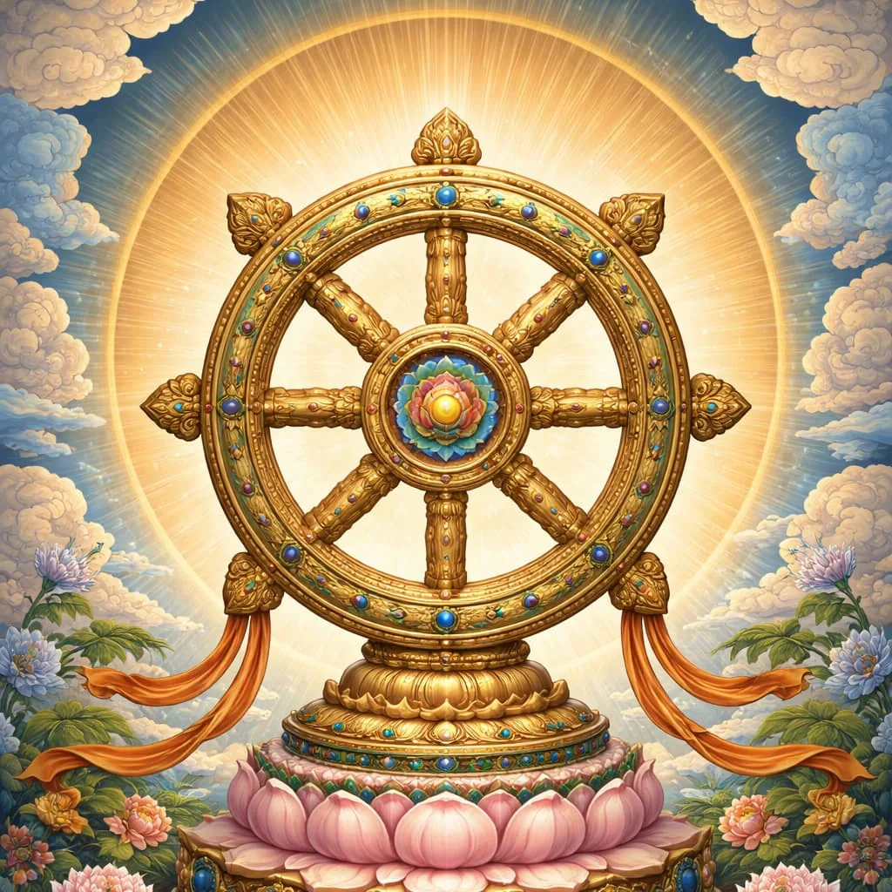
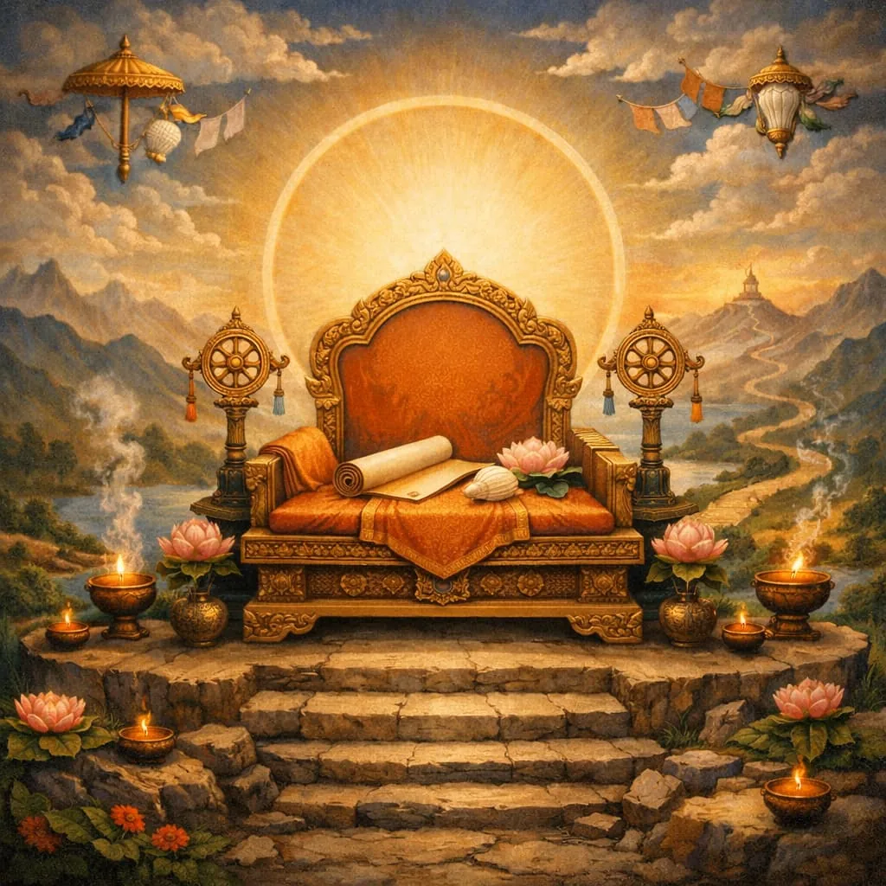

Visual Teaching Tools


Don't confuse the Dharmachakra (Wheel of Dharma, representing the Buddha's teaching) with the Bhavachakra (Wheel of Life/Becoming), which depicts the realms of samsara and the cycle of rebirth. Different wheels, different meanings.

Early Buddhist art often represented the Buddha through symbols (footprints, empty throne, bodhi tree) rather than human images. Scholars debate whether this was a deliberate doctrinal choice or simply artistic convention of the period. Human Buddha images became common from around the 1st-2nd centuries CE.
Watch how Buddhist art communicates teachings through form, gesture, and symbol
As you watch, notice: posture (asana), hand gesture (mudra), facial expression, and symbolic features.
Before we practice mindfulness, a reality check on how Buddhism is actually lived
Historically, intensive meditation was a specialist practice, even among monastics (modern lay meditation movements are an important exception)
Shwedagon Pagoda, Myanmar
Dana means giving. For lay Buddhists it often takes the form of offering food, robes, or support to monks and nuns, who in turn offer teaching and a "field of merit." Generosity is traditionally the first and most basic Buddhist practice.
Work individually
Q10. How did ordinary lay Buddhists and monks mutually support each other?
Write your answer in the live worksheet (opens in a new tab).
Sati = “remembering to be aware” (waking up from autopilot)
Today’s practice will use: breath → body sensations → thoughts as events
AI-generated illustration
Term coined by Miles Neale; popularized by Ron Purser & David Loy (2013). It describes commodified mindfulness stripped of Buddhist ethical framework. Critics argue corporate mindfulness helps workers cope with exploitative conditions rather than questioning them—turning a liberative practice into a productivity tool.
(Optional, 5-7 minutes)
Debrief: What did you notice? Any challenges?
Sacred Text Workshop
Buddhism is often described as emphasizing orthopraxy (correct practice) over orthodoxy (correct belief), though Right View is the first factor of the path. The Dhammapada reflects this emphasis: it focuses on training the mind through action and reflection more than on professing doctrines, and not on divine revelation.
Genre: Ethical aphorisms, not systematic philosophy
"Portable" wisdom: An anthology of sayings, not a continuous sermon
Siddhartha Gautama (c. 5th-4th century BCE), the historical founder of Buddhism, is traditionally credited with teaching the verses collected in the Dhammapada. However, like many ancient texts, the Dhammapada was transmitted orally for centuries before being written down, so scholars debate which verses go back to the historical Buddha and which were added by later Buddhist communities.
Verses are self-contained. You can read non-linearly—order matters less than the idea.
Repetition and variation serve as drills to train ethical reflexes.
Reading tip: Read it like philosophical poetry—cluster ideas, compare images, track recurring claims.
Verse 1 uses mano ("mind"). A closely related term, citta, is often translated as "mind" or "heart-mind"; in Buddhist psychology it refers to the mental/emotional complex that generates intentions, perceptions, and reactions. The claim that "mind precedes action" means that before you act, there's a mental state (desire, anger, compassion, wisdom) that shapes what you do and how you experience it.
Read slowly—treat verses like "dense files" that must be unzipped by thinking. Each verse rewards careful contemplation—including its translation.
Different translators render key Buddhist terms quite differently. For example, "dukkha" can be translated as "suffering," "stress," "unsatisfactoriness," or "anguish." Similarly, "dhamma" appears as "teaching," "truth," "law," or "righteousness" depending on the translator. These choices shape interpretation. Acharya Buddharakkhita renders most terms in plain English, keeping a few Pali terms such as Dhamma and Nibbana. Other popular translations include Thanissaro Bhikkhu (more literal) and Gil Fronsdal (more accessible). Stay with our assigned translation for consistency.
Practice-centered traditions (orthopraxy) emphasize what you do—rituals, meditation, ethical conduct—as the core of religion. Belief-centered traditions (orthodoxy) emphasize what you profess—creeds, doctrines, theological statements—as primary. Christianity has historically emphasized orthodoxy (Nicene Creed, "Jesus is Lord"). Buddhism is often described as emphasizing orthopraxy (Eightfold Path, meditation practice), though Right View is also foundational. This doesn't mean Buddhism has no beliefs or Christianity has no practices, but it indicates where each tradition locates religious authenticity.
What the Dhammapada leaves in your pocket
Dhammapada 5 · Yamakavagga (The Pairs)
trans. Acharya Buddharakkhita
Dhammapada 222 · Kodhavagga (Anger)
trans. after Buddharakkhita / Nārada
Dhammapada 338 · Taṇhāvagga (Craving / Thirst)
trans. Acharya Buddharakkhita
Dhammapada 165 · Attavagga (The Self)
trans. Acharya Buddharakkhita
Dhammapada 239 · Malavagga (Impurity)
trans. Acharya Buddharakkhita
You are not a finished object. Pick the line that found you. Use it once before Friday — not in a paper. As a check before you act.
Dhp 5 · 222 · 338 · 165 · 239 — Buddharakkhita trans.
→ / Space: Next slide
← : Previous slide
S: Speaker notes
F: Fullscreen
O: Overview
ESC: Exit/Close